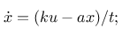
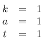
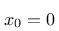
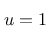
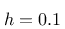
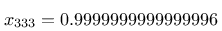
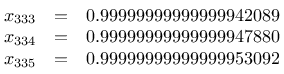

Updates
Nachdem ich mir in meinem früheren Artikel zum Thema der Mathematik mit beliebiger Präzision in Java noch nicht sicher war ob es Sinn machen würde, mein Framework für die numerische Behandlung von Differentialgleichungssystemen auf die Option der Benutzung von BigDecimal als unterliegenden Datentyp zu erweitern, habe ich nun doch damit experimentiert:
Trotz meiner im früheren Artikel geäußerten Überraschung über das Fehlen jeglicher höherer Mathematik in Java im Datentyp BigDecimal prüfte ich das von mir geschaffene Framework für die numerische Behandlung von Differentialgleichungssystemen auf seine Konvertierbarkeit in den Datentyp BigDecimal.
Ich erkannte, dass ich höhere Mathematik tatsächlich nicht benötigte, so lange die zu lösenden Gleichungssysteme nur einfach genug waren und ich einfache Lösungsalgorithmen verwendete. Ich entschied mich, als Lösungsverfahren das (explizite) Eulerverfahren zu verwenden und die Experimente am Lorenz-Attraktor und dem Sprott-System M durchzuführen. Dazu plottete ich ausgehend von identischen Startzuständen jeweils 10000 Punkte der Trajektorien nach unterschiedlich vielen Iterationen.
Das System Sprott M zeigte erfreulich wenige Unterschiede zwischen beiden Verfahren - erst im letzten Bild sieht man einen qualitativen Unterschied - bis dahin waren die Unterschiede lediglich quantitativer Natur: Eine Schleife, die es bei x=0.5 und y=-1 und der Berechnung mit BogDecimal noch gibt, existiert bei der Berechnung mit doubles nicht mehr.
Sehr viel deutlicher (und früher) sind starke qualitative Unterschiede bei der gegenüberstellung der Berechnungen mit unterschiedlichen Datentypen am Lorenz-Attraktor zu sehen - dort treten bereits nach nur 100000 Schritten deutliche Unterschiede zu Tage.
Es sei abschließend noch angemerkt, dass für die Berechnungen mit BigDecimals die Genauigkeit ebenfalls eingeschränkt werden musste: Völlig alleingelassen stieg die Anzahl der Nachkommastellen, die für de Darstellung der Zwischenergebnisse benötigt wurde, immer weiter an, so dass die Berechnung schlussendlich zum Erliegen kam. Daher habe ich hier mit dem willkürlich festgelegten Wert von 100 Nachkommastellen bei der Benutzung von BigDecimal gearbeitet.
Ein weiterer Beleg für die unzureichende Qualität bei der Berechnung mathematischer Probleme mit dem Datentyp double - nicht nur mittels Java - zeigt sich bei der Berechnung der Differentialgleichung erster Ordung

mit

und dem Anfangswert

Hier sollte sich der Zustand (der Wert von x) asymptotisch dem Wert der Störung u annähern. Setzt man zum Beispiel

so sollte sich bei numerischer Lösung des Gleichungssystems der Wert von x langsam dem Wert 1 nähern. Behandelt man die Differentialgleichung aber mit dem Eulerverfahren mit einer festen Schrittweite von

so ändert sich der Wert von x ab Schritt 333 nicht mehr - er bleibt bei

stehen. Wenn aber gerade die 16. Stelle nach dem Komma für einen nachfolgenden Rechenschritt wichtig wäre - oder schlimmer noch: der Wert der Ableitung von x, der sich ja durch die Änderung von x von Zeitschritt zu Zeitschritt ausdrücken lässt - dann ist die gesamte Berechnung am diesem Schritt falsch.
Zum Vergleich noch die Werte an dieser Stelle bei der Berechnung mittels des Typs BigDecimal mit 100 Nachkommastellen (zur Darstellung schneide ich hier jeweils nach 20 Nachkommastellen ab):

Man sieht deutlich, dass die Berechnung nach dem 333. Schritt wegen der größeren Präzision weitergeht und auch den doch schon beachtlichen Fehler in Schritt 333.
Aktualisierung vom 26. Februar 2020
{kind=link}
{kind=link}
{kind=link}
{kind=link}
{kind=link}
{kind=link}
Artikel, die hierher verlinken
Van-der-Pol- und Chua-Systeme
26.02.2020
Ich wollte nach längerer Zeit wieder einmal in die Welt chaoticher Systeme eintauchen und habe mich dazu mit zwei Systemen beschäftigt...
Doppelte Genauigkeit in Java
03.08.2019
Ich berichtete hier bereits von den durch die Einschränkungen der Fließkomma-Arithmetik-Implementierungen in modernen Computersystemen zu beachtenden Ungenauigkeiten in numerischen Computersimulationen am Beispiel nichtlinearer dynamischer Systeme. Nach meinen ersten Versuchen der Shaderprogrammierung habe ich eine weitere Methode untersucht, dieser Ungenauigkeiten mit vertretbarem Aufwand Herr zu werden...
GC und beliebige Präzision in Java
24.11.2018
Das letzte Mal, als ich über Vor- und Nachteile der Durchführung mathematischer Berechnungen mit verschiedenen Datentypen schrieb, vernachlässigte ich einen Aspekt, dessen Einfluss und Wichtigkeit von der benutzten Programmiersprache und konkreten Implementierung abhängt:


Vor 5 Jahren hier im Blog
-
LXC Netzwerk Degrader
06.10.2019
Ich habe neulich ein Skript zur automatisierten Erstellung eines Routers in einem LXC-Container präsentiert - ein wenig wie Docker nur ohne Docker.
Weiterlesen...
Tags
Android Basteln C und C++ Chaos Datenbanken Docker dWb+ ESP Wifi Garten Geo Git(lab|hub) Go GUI Gui Hardware Java Jupyter Komponenten Links Linux Markdown Markup Music Numerik PKI-X.509-CA Python QBrowser Rants Raspi Revisited Security Software-Test sQLshell TeleGrafana Verschiedenes Video Virtualisierung Windows Upcoming...
Neueste Artikel
- Carl Sagan - Christmas Lectures at the Royal Institution
Die Royal Institution hat in ihren Schätzen gegraben und die Christmas Lectures von Carl Sagan auf Youtube nochmals veröffentlicht. Meiner Ansicht nach unbedingt lohnenswert für alle, die Englisch verstehen!
Weiterlesen... - Turing complete LLMs
Ich beschäftige mich mit Cybersecurity auch beruflich - während mein Fokus privat und als Hobby hier eher auf crypto und im Speziellen auf PKI liegt interessiere ich mich beruflich für secure Softwareentwicklung und Minimierung von Angriffsoberflächen.
Weiterlesen... - sQLshell endlich wieder per WebStart verfügbar!
Die sQLshell ist nunmehr wieder in drei Deploymentvarianten verfügbar: Dem Standardinstaller für Linux und Windows, der portablen Version zum Start von - zum Beispiel - einem USB-Stick und endlich wieder als WebStart-Variante
Weiterlesen...
Manche nennen es Blog, manche Web-Seite - ich schreibe hier hin und wieder über meine Erlebnisse, Rückschläge und Erleuchtungen bei meinen Hobbies.
Wer daran teilhaben und eventuell sogar davon profitieren möchte, muß damit leben, daß ich hin und wieder kleine Ausflüge in Bereiche mache, die nichts mit IT, Administration oder Softwareentwicklung zu tun haben.
Ich wünsche allen Lesern viel Spaß und hin und wieder einen kleinen AHA!-Effekt...
PS: Meine öffentlichen GitHub-Repositories findet man hier - meine öffentlichen GitLab-Repositories finden sich dagegen hier.